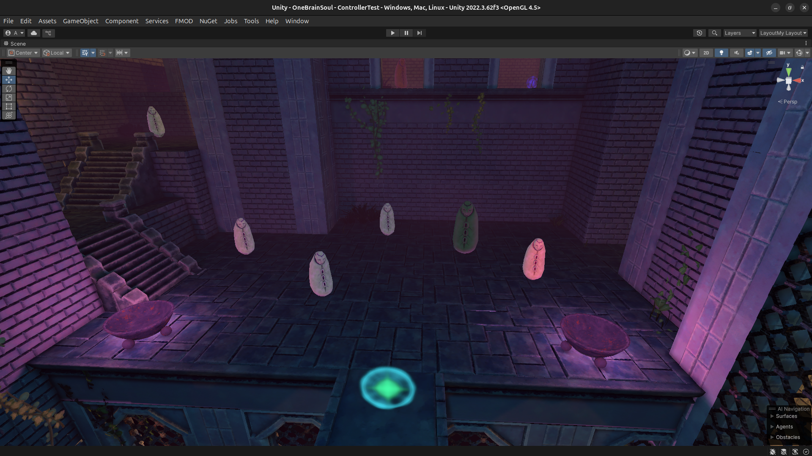
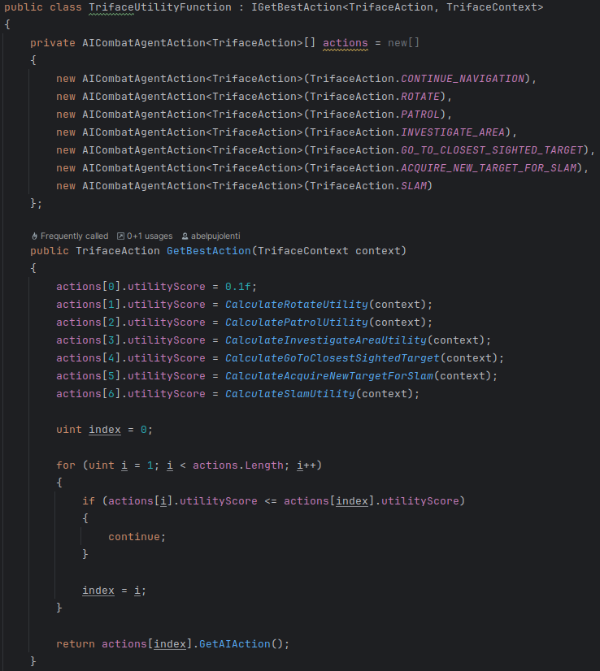
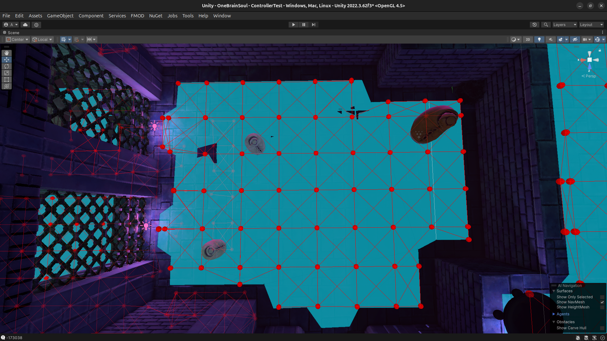

Pounce Palace is a singleplayer first-person platformer game where the player has to acquire movement skills and learn how to use them in order to defeat the enemies in their path to complete the level.
This game was developed in Unity.
The enemies in Pounce Palace must be controlled by an AI that decides the best output based on the situation. In addition, there are 2 types of enemies, static and mobile. So a system must be developed that gives mobile enemies the most optimal path.

Implementation
The decisions made by the AI would be a great weight for the performance and should be easily modified. With that knowledge, the chosen Decision Making algorithm had to be optimal and very easy to tweak when the iterations come.
Due to these requirements, the algorithm chosen was UBS (Utility Based System), this algorithm has regular computational cost and has no difficulty being expanded.
The output would be translated to an action that the enemy performs. Some of these actions were desired to be repeated indefinitely if needed, but others don't; to handle this, each enemy had a list of actions that could be repeated.

A requirement for the mobile AI was not to collide against other AIs, whether mobile or not.
To make this possible, the AIs need to have a "personal area" that no AI should enter, but Unity's built-in NavMesh doesn't allow that behavior.
I solved this issue by implementing our own NavMesh, with Unity's NavMesh help.
To create our NavMesh, we get Unity's NavMesh volume, then from the top of the plane to its bottom we launch Raycasts, they are distributed with a predefined separation from the editor.
These Raycasts retrieves the hits with the NavMesh surfaces, with an epsilon to cover more surface.
With that information the nodes were disposed where the hits take place. Once all nodes were placed, they were connected to other nodes if:
- The other node was inside a distance threshold
- The connecition didn't create an edge that went outside of the Unity's NavMesh surface
These computations are too slow to be done once the game starts. But this data would be persistent throughout the game,
so, we create this NavMesh from the editor and save it as a binary file, and when the game begins, all the mobile enemies obtain a DeepCopy of that NavMesh.
With this solution, we could define "personal areas" for all the AIs by incrementing their nearer edges' weight. Thus, they avoid colliding with each other.

Taking control of the AI movement was great, but led to another issue: the movement was visibly calculated by an AI.
To avoid this perception from the player, I decided to take control of the Parthfinding algorithm. We needed one that was optimal and fast. A* achieves these requirements due to their use of heuristics.
When A* returned a path, this was optimized out by first removing any node that was not a corner point, and followed by removing any node that might be an unnecessary step between 2 nodes.
Finally, the optimized path was disposed to the AI.